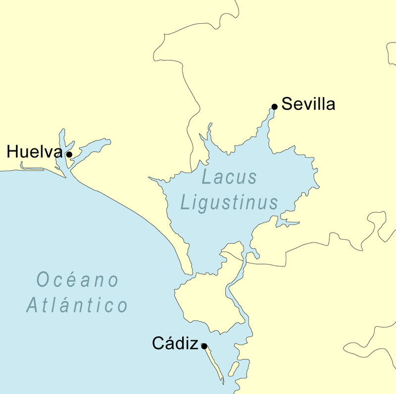
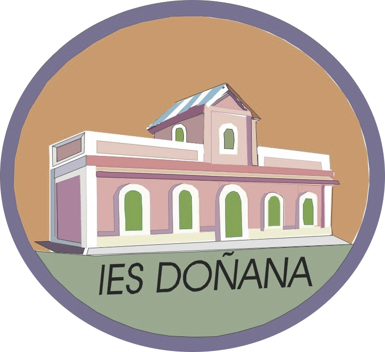
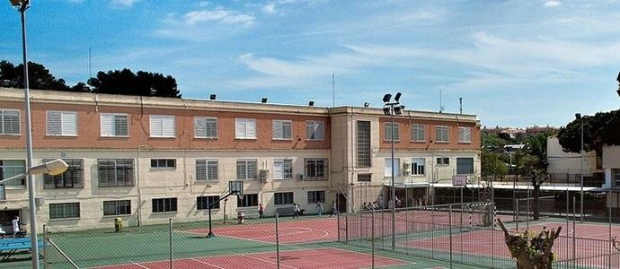

¿Por qué este nombre?
La denominación de nuestro centro hace referencia a:
- La zona geográfica donde se encuentra (Parque Nacional de Doñana y alrededores).
- Que, aunque ahora sean humedales, en la época prerromana era una albufera.
- El “lacus ligustinus”, cuna de la civilización tartésica, era casi un mar interior.
Al colmatarse el lago-mar, se creó toda la zona del coto y sus alrededores: Matalascañas, El Rocío, Isla Mayor y Sanlúcar de Barrameda. Este último donde se encuentra nuestro IES inspirador.

Centro inspirador: IES doñana

Se encuentra en Sanlúcar de Barrameda y su oferta educativa, la más amplia, es:

Proyectos enfocados en:
- Integra actividades prácticas de: cuidados de huertos ecológicos y medioambientales.
- Con estrategias como FORMA JOVEN : con actividades promotoras de igualdad de género y prevención de riesgos adolescentes.
- Un plan propio sobre salud laboral y prevención de riesgos laborales en las F.P.
- Escuela TIC 2.0 con innovación mediante herramientas tecnológicas, informáticas y comunicativas.
Número de alumnos estimado: unos 75 grupos de 30 alumnos = 2 250 alumnos en total.
Según la LOE, el número máximo de alumnos por clase es de 30-35.
El IES Doñana recibe cada curso escolar, entre todas las modalidades, unos 1000 alumn@s entre:
- E.S.O. Y bachillerato (Ciencias y Tecnología; Humanidades y Ciencias Sociales).
- Grupo de acceso a Grado Medio y F.P. Básica (3 familias profesionales).
- Ciclos Formativos Medios y Superiores (6 familias profesionales entre ambas disciplinas).
En cuanto a las líneas que conforman el IES Doñana:
- E.S.O. de 2 a 4 líneas en 10-12 grupos.
- Bachillerato 2 líneas para cada modalidad.
- Curso de acceso a Grado Medio 1 grupo.
- F.P. Básica 2 grupos para cada una de las 3 modalidades.
- Grado Medio 2 grupos para cada modalidad, excepto Administración que serán 3.
- Grado Superior 2 para cada modalidad, excepto Finanzas que serán 3.